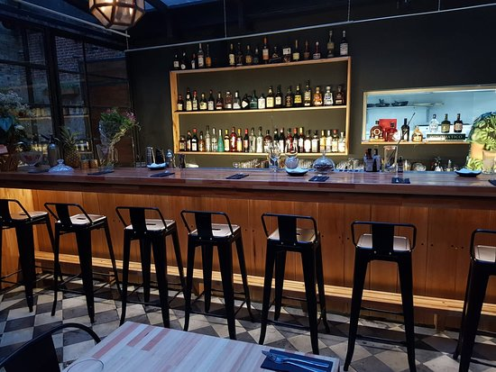

<ion-row style="flex-grow: 1;">
  <ion-col>
    <ion-card>
   
      <div align="center" style="padding-top: 10px;">
        
      </div>      
      <ion-card-header>
        <ion-card-title style="color: rgb(157, 156, 156);"><u>Pregunta:</u></ion-card-title>              
      </ion-card-header>
      <ion-card-content>
        <label style="font-size: 18px;color: white;">¿Cuan ordenado recibio/dejo el establecimiento? (1 - 10)</label>
        <!--(range, input, radio, check, select).-->  
        <ion-range (ionChange)="capturarRespuesta( $event)" 
                    min="1" 
                    max="10" 
                    pin color="violeta" style="color: #8D2CE2;">
          <ion-icon slot="start" size="small" name="star-outline"></ion-icon>         
          <ion-icon slot="end" name="star"></ion-icon>
        </ion-range>             
      </ion-card-content>
    </ion-card>
  </ion-col>
</ion-row>